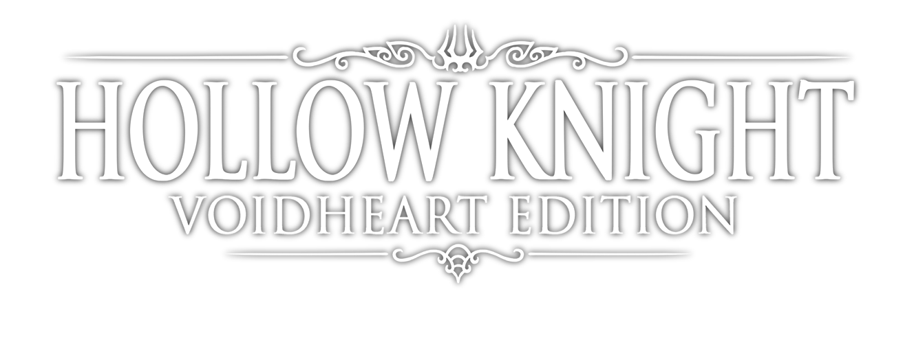
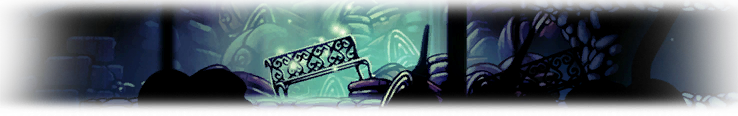
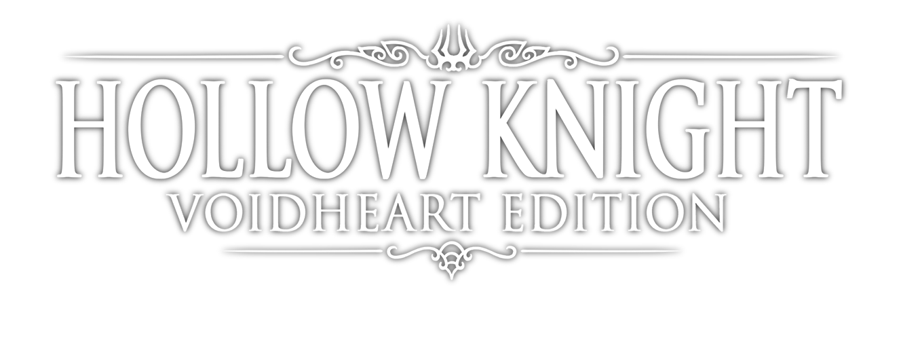
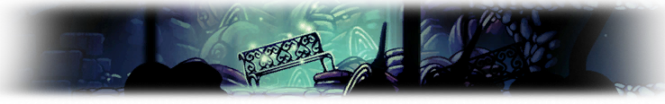

Sobre
Hollow Knight é um aclamado jogo de ação e aventura no estilo metroidvania, desenvolvido pelo estúdio independente australiano Team Cherry.
Lançado originalmente em 2017, o jogo rapidamente conquistou jogadores e críticos com sua atmosfera imersiva, visual artístico desenhado à mão e jogabilidade desafiadora e envolvente.
Ambientado no misterioso reino subterrâneo de Hallownest, Hollow Knight coloca o jogador na pele de um pequeno cavaleiro sem nome que explora cavernas antigas, cidades em ruínas e florestas esquecidas.
Ao longo do caminho, ele encontra criaturas estranhas, aliados misteriosos e chefes imponentes, enquanto tenta desvendar os segredos que corromperam aquele mundo.
Um dos grandes destaques do jogo é sua narrativa sutil e fragmentada, que convida o jogador a montar o enredo por meio da exploração e da interpretação de pistas espalhadas pelo ambiente.
Com trilha sonora melancólica e ambientação sombria, Hollow Knight oferece uma experiência profunda e emocional, marcada por um equilíbrio entre beleza e tragédia.
Ideal para quem aprecia jogos com exploração não linear, atmosfera rica e combates precisos, Hollow Knight é considerado um dos melhores exemplos modernos do gênero metroidvania,
e segue conquistando uma base fiel de fãs enquanto aguarda-se ansiosamente por sua aguardada sequência, Hollow Knight: Silksong.
Game
No subterrâneo reino de Hallownest, civilizações de insetos floresceram sob uma antiga ordem, hoje mergulhada em ruínas.
Uma praga misteriosa, conhecida como a Infecção, começou a se espalhar, enlouquecendo os habitantes e consumindo tudo ao redor.
O protagonista, um pequeno cavaleiro silencioso, chega a Hallownest atraído por algo desconhecido.
Explorando as profundezas do reino, ele encontra vestígios de uma era passada, seres poderosos e memórias esquecidas.
No centro do conflito está a Radiância, uma entidade de luz que havia sido esquecida, mas que ressurge através da Infecção como um ato de vingança.
Ela ameaça destruir o que resta da sanidade e da vida no reino, ao corromper mentes e corações com seu brilho incontrolável.
O cavaleiro descobre que sua existência não é por acaso: ele é um dos muitos recipientes criados com o propósito de conter a Radiância.
Diferente dos outros, ele sobreviveu, mas carrega imperfeições — o que levanta dúvidas sobre sua capacidade de completar o que começou.
Durante sua jornada, o cavaleiro enfrenta antigos guerreiros, confronta seus próprios limites e descobre os erros cometidos por aqueles que tentaram controlar o destino do reino.
Dependendo das escolhas do jogador, o desfecho pode trazer diferentes fins para Hallownest: sacrifício, renovação, ou mesmo libertação da Radiância.
Com sua narrativa sutil e ambiente carregado de mistério, Hollow Knight oferece uma história rica que se revela aos poucos, recompensando os curiosos e atentos.

Criador
A Team Cherry é um pequeno estúdio de jogos da Austrália.
Eles são os criadores de Hollow Knight, um jogo muito elogiado por fãs e críticos.
O estúdio começou com três pessoas: Ari Gibson, William Pellen e David Kazi.
Eles uniram suas habilidades em arte, design e programação para fazer o jogo.
Hollow Knight foi criado depois de uma game jam e cresceu com a ajuda de uma campanha no Kickstarter.
Mesmo com poucos recursos, eles conseguiram fazer um jogo grande, bonito e bem feito.
Hoje, a Team Cherry trabalha em Hollow Knight: Silksong, a continuação do primeiro jogo.
Eles demoram para dar notícias, mas os fãs sabem que estão focados em entregar algo com muita qualidade.
Silksong
Hollow Knight: Silksong é a aguardada sequência de Hollow Knight, desenvolvida pela Team Cherry.
O jogador controla Hornet, que explora um novo reino chamado Pharloom, enfrentando inimigos e chefes desafiadores.
O jogo será oficialmente lançado no dia 4 de setembro de 2025, às 11h no Brasil.
Estará disponível para PC, PlayStation 4 e 5, Xbox One, Xbox Series X/S, Nintendo Switch (1 e 2) e também será lançado no Xbox Game Pass desde o primeiro dia.
Silksong traz mais de 200 inimigos, mais de 40 chefes, um mundo amplo e mecânicas ágeis com a protagonista Hornet.
Trata-se de uma nova jornada repleta de beleza, mistério e desafios — e finalmente com data marcada para chegar às mãos dos fãs.
Contato
Email: TeamCherry@hottmail.com